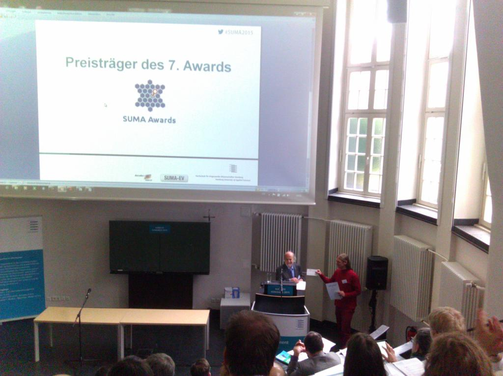

The Windows installer has updated translations for French, Indonesian, and Simplified Chinese, and is newly translated into Bulgarian, Croatian, and Japanese.
In addition, Freenet unstable testing prerelease 1471-pre2 is now available. For details on what it contains and how to test it see the release announcement.
The redesigned website is now live! Existing URLs redirect to their new equivalents. Thanks to everyone who contributed feedback, development, and translations.
If we missed something, please tell us in our support chat!
In the next few weeks we will transition to a redesigned website. This will be the first major change since 2009. In addition to looking more modern, this new version is also more practical to modify, test, and translate.
If you'd like to get a look at the site in testing you can find it here - as given in the prompt the username and password are "guest". If you'd like to help with translation, please join us on the "website" resource on Transifex.
If you have any feedback on the new website design please let us know on chat or the support list!
A recent article outlines practical attacks against elliptic curves to recover private keys which worked against the Bouncy Castle crypto provider used by Freenet until Build 1466 (released 2014-11-09) and against Java JCE until July 2015. If you use the current stable build 1470 on an updated Java, your node is not vulnerable to these attacks.
On darknet the attacks required knowing both node references, so in darknet mode Freenet was only vulnerable to them if two friends connected to the same malicious third party or shared their node references in public. On opennet the target of these attacks would have been the seednodes because other opennet connections are neither persistent nor trusted.
This release fixes Freemail problems that prevented sending mail, and removes a compromised opennet seed node. Freemail also gains a new message link on the inbox page, links to senders' WoT profiles, and new translations:
To clarify, the CHK metadata bug fixes in 1468 are added as a new compatibility mode that is not yet the default. Compatibility with 1416 keys is available.
The Fred Spanish translation has comprehensive updates as well.
The Windows installer and tray app have updated translations. The installer is newly translated into Portuguese (Portugal) and Serbian. The tray app is newly translated into Spanish, Persian, Portuguese (Portugal), and Serbian. This also fixes a tray app problem where translations for Brazilian Portuguese and Simplified Chinese were not used.
This release fixes two bugs introduced in build 1468. One caused very slow operation and high CPU usage with large files and physical security levels above None (i.e. Freenet-level disk encryption). The other prevented interactive usage (e.g. freesite browsing) while finishing large downloads or starting large uploads.
Despite being in some form of prerelease for over 6 months, and two weeks of being available as a release candidate, we didn't catch some bugs in time. There are two main issues:
Sadly, these problems can combine to make a node use 100% CPU to slowly process bulk queues while the realtime queue does not respond. Matthew (toad_) has already released a snapshot to fix these problems, which you can find on the mailing list or on FMS.
The Freenet team is very happy to announce the stable release of Freenet 0.7.5 build 1468.
Important notes: downgrading from build 1468 is not supported; if you want to go back to build 1467 without losing the upload and download queues, before upgrading, back-up the following files and directories: master.keys, persistent-temp-*/, and node.db4o (see https://wiki.freenetproject.org/Program_files ). Please note that running transfers will be restarted from scratch too. A reminder to those testing auto-update to 1468-pre4: please restore your auto-update key to the default. One way to do this is to stop Freenet, remove the "node.updater.URI" line from freenet.ini, and start Freenet again.
In this release, the way Freenet stores data locally has changed drastically by no longer using the now-deprecated db4o object storage. It is replaced with the product of toad's summer of work - a custom on-disk format that is much more robust against corruption and more efficient.
Thank you for using Freenet!
The Windows installer is updated with Java 8u45, a new tray application, and is newly translated into:
This weekend we will release an updated Windows installer for build 1467 along with a new Windows tray application. We will also release 1468-pre4, which if all goes according to plan will be the last prerelease before a stable release two weeks later.
If you'd like to help with translations before then please do so! The Windows-related resources are:
Some of the Windows tray resources contain many strings tagged notranslate; to hide these search for Tags: translate.
The UN Special Rapporteur published a report on encryption, anonymity, and the human rights framework (doc, companion pdf). From the summary:
encryption and anonymity enable individuals to exercise their rights to freedom of opinion and expression in the digital age.
The reports concludes that
63. The use of encryption and anonymity tools and better digital literacy should be encouraged. The Special Rapporteur, recognizing that the value of encryption and anonymity tools depends on their widespread adoption, encourages States, civil society organizations and corporations to engage in a campaign to bring encryption by design and default to users around the world and, where necessary, to ensure that users at risk be provided the tools to exercise their right to freedom of opinion and expression securely.
We with the Freenet Project welcome the official recognition of our mission as important part of securing human rights in the digital age and we invite everyone - especially reporters and civil society organizations - to install Freenet and its communication tools to provide a point of contact for users at risk.
The video from the talk given when Freenet received the SUMA Award 2015 for being the best project against surveillance and espionage on the Internet is available on the Award page and on YouTube:
The Freenet Project receives the SUMA award and Arne Babenhauserheide accepts the prize as representative of the project. Arne then presents the current capabilities of Freenet to regain confidential and pseudonymous speech on the Internet, along with a vision of how whistleblowers could use Freenet to contact journalists without spilling their identity.
The installer for Linux, Unix, and Mac OS X is updated to better detect Java.
Build 1468 continues to make progress toward release.
What is done:
What remains to be done:
Because this is such a large release new installers for build 1467 will be released shortly to test those changes. Once everything on this list is complete, there will be a release candidate, then finally the stable release.
The Freenet project has joined the Localization Lab organization on Transifex. This allows a larger team of translators, translating into more languages, and access to paid support.
If this transition has caused any problems please let us know!
The Windows tray application distributed as of build 1467 is written in the automation scripting language AutoHotKey. It has not been well-maintained and is also often falsely detected by antivirus by virtue of the language it uses. We are pleased to announce a new Windows tray application written in C# which has some additional features:
If all goes well we plan for this tray app to be distributed with build 1468. Testing is appreciated! If you'd like to try it for yourself you can find it here. Please let us know how it goes and if you'd like to see any changes.
At this year's congress of SUMA-EV, association for free access to knowledge, the SUMA award was awarded in the venerable Karl-H.-Ditze lecture hall of the Hamburg University of Applied Sciences. The topic of the award, was the surveillance scandal, revealed by whistleblower Edward Snowden: 'protection against total surveillance'. From submissions of about 50 projects for the SUMA award 2014/15 the panel of SUMA-EV selected the Freenet Project as the winner. The prize money of 2500 euro will be used like regular donations to fund our one paid developer.

Wolfgang Sander-Beuermann with Arne Babenhauserheide, long-term Freenet contributor, as representative of the award winner. Photo: Michael Christen in Hamburg, Lizenz: CC0.
Developers of the privacy-focused Debian derivative Mempo report that it can download updates over Freenet! For details, see their page on Apt over Freenet.
Key Points:
That means it is now possible to get reproducibly built kernels checked by anonymous (and therefore hard to pressure) contributors and update them over Freenet without disclosing that you use them. This applies to the packages provided by Mempo - other apt-get activity like installing GIMP is still public. It would be possible to host the entire Debian repository in Freenet, but this is not yet on the agenda for Mempo because this other activity does not disclose the potentially sensitive information that you want additional privacy.
The practical cool result now, is that Mempo repository can not be censored, DDoSed or taken offline, despite having just 1 tiny server (or no server at all) - rfreeman (one of the mempo developers)
This release fixes a bug introduced in build 1466 which can erase the list of plugins to load when Freenet starts if it crashes. If you are affected by this bug and can no longer connect, try adding the UPnP or JSTUN plugins again.
This release also has updated Finnish, French, Dutch, and Brazilian Portuguese translations thanks to volunteers on Transifex.
The Windows installer is updated:
Thank you for using Freenet!
This release is planned to be the second-to-last version of Freenet to support Java 6. The version after this one will refuse to upgrade unless running on Java 7 or later. Support for this behavior is part of a larger effort to allow separate official update channels - stable, testing, and unstable - as well as make it easier to publish unofficial update channels and further improve deployment security.
Highlights for this build:
Additionally Matthew's (toad_'s) summer work on a custom on-disk format is done. This release lays the groundwork to include the results of that work in the next release. This is designed for less disk activity and better behavior when corrupted.
This release coincides with the 25th anniversary of the demolition of the Berlin wall (Mauerfall), which marked the beginning of the end of a large censorship and surveillance regime. May censorship be demolished everywhere!
Thank you for using Freenet!
The link to http://127.0.0.1:8888 works for default Freenet nodes, but will not work for some setups. If you have a nonstandard setup, you should know the correct URL to use.
According to the press, half of the hidden sites on Tor are now down, apparently connected to the arrest of a man allegedly behind Freedom Hosting, a hosting service for Tor hidden services. Some of these sites were said to offer illegal content and were apparently run by the FBI for two weeks, using a Javascript-based browser exploit to try to find their users.
This has had no effect on Freenet and could not happen on Freenet. Tor hidden services are centralised: A hidden service on Tor is run by a single server somewhere, and if this server is found, the whole site can be shut down, or compromised. In this case half the hidden sites on Tor were run on the same group of servers! See the Tor blog and mailing list.
On Freenet, anything you upload is distributed across the network across thousands of separate nodes all over the world, and will remain available for as long as it remains sufficiently popular: Freenet is a distributed data storage network designed to prevent censorship, provide anonymity and be hard to block. To see more information on the difference between Freenet and Tor, see our explanation in the FAQ.
Also, the Javascript exploit mentioned would not have worked on Freenet because Freenet removes Javascript by default. The Tor Browser Bundle has an option to block Javascript. We recommend that you enable this if you use Tor.
Furthermore, there was no attack against Tor itself: As far as we know, no users of the major "darknets" (Freenet, Tor and I2P) has been traced by attacking the networks, by law enforcement or anyone else. In this case, it appears to have been user error, not a problem with Tor itself. Similarly on Freenet, users need to be careful, and Freenet will often tell you when you are about to do something risky.
Having said that, Freenet's security is not perfect, and there are some known (but theoretical) weaknesses, so it might be possible for an attacker with relatively limited resources to trace individual Freenet contributors. Most of Freenet's weaknesses can be addressed by making long-lived connections with people that you trust, i.e. building a friend-to-friend "darknet". This functionality is already a part of the regular Freenet software, but we need more users who use Freenet in friend-to-friend mode to improve anonymity.
We have planned further improvements, which should greatly improve security (censorship resistance, anonymity and resistance to blocking), speed and usability. The expanding online surveillance from both governments (e.g. PRISM) and private corporations clearly show that tools such as Freenet, TOR and I2P are essential for a healthy democracy.
Please help us secure freedom of access to information by contributing to the Freenet-project with code, donations, translations, or just by running a node or creating content (anonymously)!
Volunteers - especially developers - are always very welcome. Feel free to contact us, through IRC online chat, the mailing lists, or on Freenet itself in the "freenet" board on FMS.
For press enquiries please contact Ian Clarke.
Long time coder xor (also known as p0s) has agreed to work, in a paid role, for us on fixing the Web of Trust plugin. This is a crucial component of many Freenet plugins:
See the Freenet Social Networking Guide for how to load the first 2 plugins.
xor is well qualified for the role as he wrote most of the current code in the Web of Trust. The immediate priority will be to improve stability and performance by implementing a new more efficient FCP API. After that further optimisations are planned.
Freenet relies on unpaid volunteer developers as well as a few key paid developers. Toad (Matthew Toseland) is returning to full time work for Freenet after a study break, although he is off to university in October, and xor is just starting working for Freenet.
Improving the Web of Trust should substantially improve the performance of the key tools mentioned above and may be used by more in the future. Thanks to all our developers and donors!
Some academics have published a couple of attacks against Freenet, and they appear to be working on more as part of a project to unmask anonymous Freenet users. Build 1411, which was released on the 3rd of September, makes their main attack largely impractical. Nonetheless, we are working on improvements to both make this attack harder and to solve some of the other known attacks. You can learn more about the attacks and our solution to them on our chief developer's personal blog.
We welcome all work to understand Freenet's security and expose any problems with it, although we would suggest that next time they might let us know before they make the paper public, as is common practice in the security community.
Finally, the long term solution is to build a darknet, a Freenet network where people only connect directly to people they trust. That means, get your friends using Freenet, and then add them as Friends on your node. When enough people use Freenet and form darknet connections, we won't need opennet, and this makes all attacks dramatically harder. We will work on making this easier and faster in the near future, as well as fixing the Pitch Black attack.
A report by Freedom House surveyed users in Azerbaijan, Burma, China and Iran for their perceptions of and preferred tools for bypassing local government censorship. In China, Freenet was the only anti-censorship tool to achieve 5 stars, and the third most widely used overall.